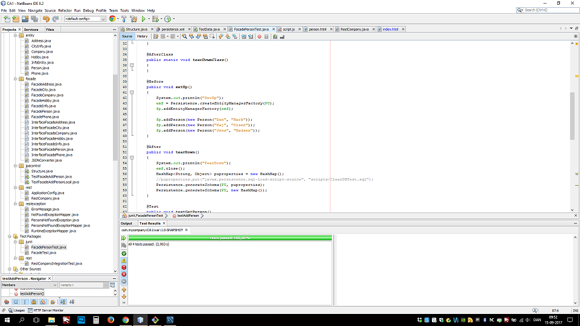

Dokumentation af CA1 DAT, Casper Emde Christensen, Stephan Pedersen, Ali Khazendar og Nicklas Vikke
Casper Emde Christensen, Stephan Pedersen, Ali Khazendar og Nicklas Vikke
DAT
Group number 2
Vores Fælles FEEDBACK på Flow 1
Vi synes det har været et udenmærket, velarbejdet og velbeskrevet 1. modul som har bragt os stor glæde og motivation men fra nu af vil vi være ærlige.
Vi synes der har været alt for meget på 3 uger og oven i købet har Thomas sagt at JavaScript skulle mindst vare 2 uger med det stof som er cuttet ned til 1 uge.
Dårligt gennemarbejdede opgaver, materiale og forklaring på hvad opgaven går ud på, meget kryptiske formuleringer og en del der er underforstået. For store opgaver med alt muligt andet som er unødvendigt for at lære det specifikke emne man har fokus på.
Vi kan godt lide Christian's materiale med noter, hans små projekter og videoer dog skal han tale lidt højere når han underviser.
Vi har virkelig gjort en indsats hverdag og vi lå i midten af på 2. semester som gul gruppe men vi har forstået 50% af 1 modul her på 3. semester og føler os hægtet af som mange andre.
REST API, error responses and JSON format
Person
@POST: /persons
@GET: persons/{id}, Return type of JSON: {firstName: lastName:}, Error msg : "Person not found for id:"
@GET: persons/all, Return type of JSON: {firstName: lastName:}
@GET: persons/all/{zip}, Return type of JSON: {firstName: lastName: Zip:}
@DELETE: persons/delete/{id}
@PUT: root
Hobby
@GET: hobby/all
Contact
@GET: /contactinfo, Return type of JSON: {firstName: lastName: eMail: Phone:}
Unit Test, Testing the Database façade(s), Testing the REST API
Unit Test
Vores Unit Test har vi valgt ikke at have fokus på fordi getter og setter på Entities ikke har noget logik
Testing Database facades

Vi har lavet en test på vores facade både med DERBY memory test og senere en lokal sql test database. Vores DERBY test virkede før vi lavede arv på Entity.Person og Entity.Company fra Entity.InfoEntity men pt. fejler den
Vores lokal sql test database virker hvis man har skemaet på localhost dog skal man slette den igen fordi vores sql script som skulle DROP og CREATE ikke virker selvom syntaxen er korrekt
REST ASSURED
Vi har ikke noget REST ASSURED som tester vores REST. Vi har arbejdet med integration test og brugt en del tid på det men den siger at serveren ikke bliver connectet
A section stating who did what
Vi var fælles om JPA strukturen og Entities med relationer. Ali og Stephan har arbejdet på REST delen. Casper og Nicklas har arbejdet på Test af facade. Test af TestFacadeAddPerson om der kunne skabes kontakt mellem programmet og Digital ocean serveren samt en lokal test på en lokal test database. Structure klassen for at kunne oprette skemaet med entiterne. Casper og Nicklas har arbejdet på TestData klassen for at kunne generer en del test data.
A description of the strategy chosen to implement inheritance and why this strategy was chosen
Strategien vi har brugt er extends på Entity.Person og Entity.Company fra Entity.InfoEntity og hvorfor vi har valgt at bruge extends er det som opgaven ligger op til at man skal bruge. Så en Person og Company får ID'et Entity.InfoEntity igennem arv.
Description of how to test the system
- we can test the API via your implemented test cases using REST Assured
Vi har ikke fået REST ASSURED til at virke med integrations test mv. Derfor kan vi ikke udfylde dette punkt
- to use the web pages that uses the API
Du kan udskrive, tilføje, slette og redigere i en person på http://207.154.220.147/company/person.html
Du kan klikke på knappen "All Persons ContactInfo" for at få alle kontakt info der findes på alle personer på http://207.154.220.147/company/person.html den virkede men når vi deployet så virkede den ligepludselig ikke